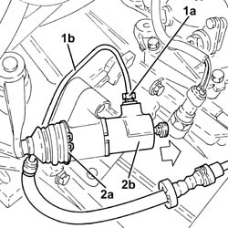
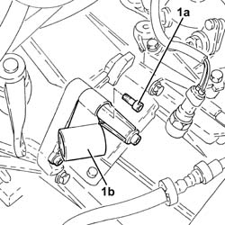
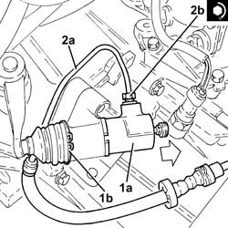

1820B30 SLAVE CYLINDER - R + R
- Path
- Procedures > 18 CLUTCH UNIT > 1820 CLUTCH RELEASE CONTROLS > 1820B HYDRAULIC CLUTCH SYSTEM > 1820B30 SLAVE CYLINDER - R + R
- Kind
- repair procedure (removal / refitting; the operation number is the code)
- Applies to
- engines: 1.8 T.SPARK, 3.2 V6, 1.9 JTD 16V; all production periods
- Interactive page
- https://sloeber94.github.io/elrnDB-aGt/en/#/125001225
Applies to: engines: 3.2 V6; all production periods
 Removing
Removing
 Refitting
RefittingProceed with the removal
Proceed with the removal
Op. 5530B52 BATTERY DRIP TRAY/SUPPORT - R.R..
Remove the protective cap from the bleed valve on the clutch operating cylinder.
Connect the recovery device (pipe and reservoir) to the bleed valve on the clutch operating cylinder.
Operate the clutch pedal until the brake/clutch reservoir is drained.
1. Undo the connector (1a) and disconnect the pipe from the vibration damper to the operating cylinder (1b), operating cylinder side.
2. Remove the circlip (2a) and release the operating cylinder (2b) from the mounting.

Applies to: engines: 3.2 V6; all production periods
1. Undo the bolts (1a) and remove the operating cylinder mounting (1b).

Applies to: engines: 3.2 V6; all production periods
Refitting
RemovingPlace the operating cylinder mounting in its housing and secure it using the bolts.
1. Place the operating cylinder (1a) in its housing and secure it to the mounting using the circlip (1b).
2. Connect the pipe from the vibration damper to the operating cylinder (2a), operating cylinder side and tighten the connector (2b) to the recommended torque.
Fastening | Component | Ø | Value (daNm) | |
|---|---|---|---|---|
2b | - | - | - | - |

Applies to: engines: 3.2 V6; all production periods
Bleed the air and top up the clutch release hydraulic system fluid level.
Op. 0010T67 HYDRAULIC CLUTCH SYSTEM BLEED AIR.
Bleed the air from the hydraulic braking system
Op. 0010T65 HYDRAULIC BRAKE SYSTEM BLEED AIR.
Proceed with the refitting
Op. 5530B52 BATTERY DRIP TRAY/SUPPORT - R.R..
Proceed with the refitting
Applies to: engines: 1.9 JTD 16V; all production periods
Removing
RefittingProceed with the removal - 1016A10 SOUND INSULATION COVER - R.R.
.
Proceed with the removal
Proceed with the removal
Op. 5530B52 BATTERY DRIP TRAY/SUPPORT - R.R..
Remove the protective cap from the bleed valve on the clutch operating cylinder.
Connect the recovery device (pipe and reservoir) to the bleed valve on the clutch operating cylinder.
Loosen the bleed valve.
Operate the clutch pedal until the brake/clutch reservoir is drained.
1. Undo the connector (1a) and disconnect the pipe from the vibration damper to the operating cylinder (1b), operating cylinder side.
2. Remove the circlip (2a) and release the operating cylinder (2b) from the mounting.
Applies to: engines: 1.9 JTD 16V; all production periods
1. Undo the bolts (1a) and remove the operating cylinder mounting (1b).
Applies to: engines: 1.9 JTD 16V; all production periods
Refitting
RemovingPlace the operating cylinder mounting in its housing and secure it using the bolts.
1. Place the operating cylinder (1a) in its housing and secure it to the mounting using the circlip (1b).
2. Connect the pipe from the vibration damper to the operating cylinder (2a), operating cylinder side and tighten the connector (2b) to the recommended torque.
Fastening | Component | Ø | Value (daNm) | |
|---|---|---|---|---|
2b | - | - | - | - |
Applies to: engines: 1.9 JTD 16V; all production periods
Proceed with the refitting
Op. 0010T64 BRAKE AND OR CLUTCH FLUID CHECK LEVEL AND TOP UP AS NECESSARY.
Proceed with the refitting
Op. 0010T67 HYDRAULIC CLUTCH SYSTEM BLEED AIR.
Proceed with the refitting
Op. 0010T65 HYDRAULIC BRAKE SYSTEM BLEED AIR.
Proceed with the refitting
Op. 5530B52 BATTERY DRIP TRAY/SUPPORT - R.R..
Proceed with the refitting
Proceed with the refitting - 1016A10 SOUND INSULATION COVER - R.R.
.
Applies to: engines: 1.8 T.SPARK; all production periods
Removing
Refitting- Op. 5530B10 BATTERY - R+R
- Op. 5530B52 BATTERY DRIP TRAY/SUPPORT - R.R.
- Op. 4450B12 FRONT OR REAR WHEELS (TWO) - R+R
- Op. 7055B65 ENGINGE BAY DUSTGUARD PROTECTION IN LEFT FRONT WHEEL ARCH R R
- Op. 7055B66 ENGINE COMPARTMENT DUST SHIELD PROTECTION IN RIGHT FRONT WHEEL ARCH - R.R.
- Op. 7055B90 LEFT FRONT WHEEL ARCH LINER - R.R.
- Op. 1072C44 EXHAUST MANIFOLD HEAT SHIELD ON BULKHEAD - R+R
- Op. 1080B40 CATALYTIC PRE-CONVERTER - R R
- Op. 2110A10 MANUAL GEARBOX AND DIFFERENTIAL - R + R
- Op. 1810A24 CLUTCH - R + R WITH GEARBOX REMOVED
- Op. 1820b38 HYDRAULIC CLUTCH ACTUATOR R R AND BLEED AIR WITH GEARBOX REMOVED
Applies to: engines: 1.8 T.SPARK; all production periods
Refitting
Removing- Op. 1820b38 HYDRAULIC CLUTCH ACTUATOR R R AND BLEED AIR WITH GEARBOX REMOVED
- Op. 1810A24 CLUTCH - R + R WITH GEARBOX REMOVED
- Op. 2110A10 MANUAL GEARBOX AND DIFFERENTIAL - R + R
- Op. 1080B40 CATALYTIC PRE-CONVERTER - R R
- Op. 1072C44 EXHAUST MANIFOLD HEAT SHIELD ON BULKHEAD - R+R
- Op. 7055B90 LEFT FRONT WHEEL ARCH LINER - R.R.
- Op. 7055B66 ENGINE COMPARTMENT DUST SHIELD PROTECTION IN RIGHT FRONT WHEEL ARCH - R.R.
- Op. 7055B65 ENGINGE BAY DUSTGUARD PROTECTION IN LEFT FRONT WHEEL ARCH R R
- Op. 4450B12 FRONT OR REAR WHEELS (TWO) - R+R
- Op. 5530B52 BATTERY DRIP TRAY/SUPPORT - R.R.
- Op. 5530B10 BATTERY - R+R
- Op. 0010T41 MANUAL GEARBOX OIL CHECK LEVEL AND TOP UP IF NECESSARY
- Op. 0010T67 HYDRAULIC CLUTCH SYSTEM BLEED AIR
Topics linked from this page (15)
- 0010T41 MANUAL GEARBOX OIL CHECK LEVEL AND TOP UP IF NECESSARY
- 0010T64 BRAKE AND OR CLUTCH FLUID CHECK LEVEL AND TOP UP AS NECESSARY
- 0010T65 HYDRAULIC BRAKE SYSTEM BLEED AIR
- 0010T67 HYDRAULIC CLUTCH SYSTEM BLEED AIR
- 1072C44 EXHAUST MANIFOLD HEAT SHIELD ON BULKHEAD - R+R
- 1080B40 CATALYTIC PRE-CONVERTER - R R
- 1810A24 CLUTCH - R + R WITH GEARBOX REMOVED
- 1820B38 CLUTCH HYDRAULIC ACTUATOR/OPERATING CYLINDER - R.R. AND BLEED AIR WITH CLUTCH REMOVED
- 2110A10 MANUAL GEARBOX AND DIFFERENTIAL - R + R
- 4450B12 FRONT OR REAR WHEELS (TWO) - R+R
- 5530B10 BATTERY - R+R
- 5530B52 BATTERY DRIP TRAY/SUPPORT - R.R.
- 7055B65 ENGINGE BAY DUSTGUARD PROTECTION IN LEFT FRONT WHEEL ARCH R R
- 7055B66 ENGINE COMPARTMENT DUST SHIELD PROTECTION IN RIGHT FRONT WHEEL ARCH - R.R.
- 7055B90 LEFT FRONT WHEEL ARCH LINER - R.R.